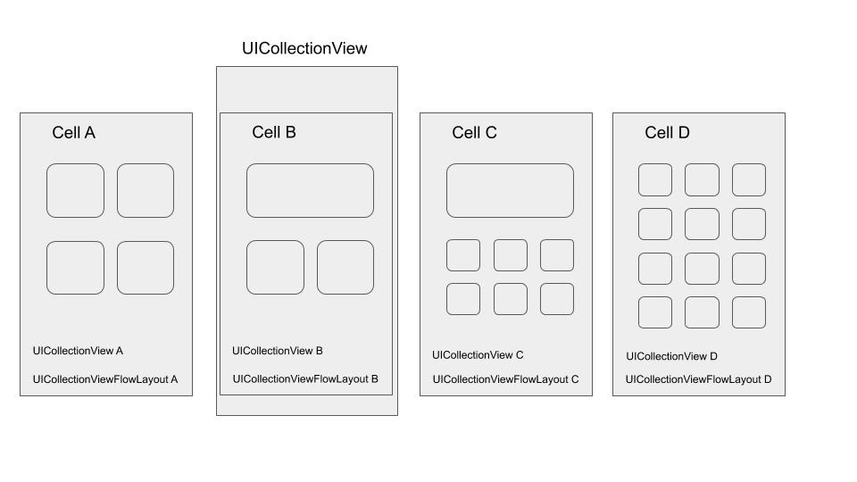

iOS - CollectionViewCell对应不同flow layout的实例
文章目录
UI交互
最近实现如下UI界面：

交互细节大致如下：
- 外部UICollectionView启用paging，左右滑动切换cell
- Cell（A/B/C/D）内各自包含一个UICollectionView（A/B/C/D），且对应不同UICollectionViewFlowLayout
碰到的一些坑
翻页
UICollectionView有paging功能，设置pagingEnabled为YES即可启用
崩溃
快速滑动时，在某些机型上会崩溃，日志是：UICollectionView received layout attributes for a cell with an index path that does not exist。
调试这个问题花费了一天时间。最后后同事沟通后，意识到之前对UICollectionView的使用存在一些误区，复用了cell和view layout对象。将代码修改为：不同view layout的cell之间不能复用。之后此问题就不再出现了。
第二级collection view UI错乱
- 第一层collection view复用cell导致的第二级collection view UI错乱。解决办法是：即便cell的实现在同一个类，但flow layout不相同的cell不应该复用。
|
|
第二级collection view数据不刷新
解决办法是：
首先，view layout对象不能复用，每次setCollectionViewLayout时的对象需要是新创建的。
其次，修改reloadData和setCollectionViewLayout顺序，保证reloadData在前。
|
|
体会
iOS调试过程中有很多只能靠“猜”，因此经验会变得很重要。
而安卓的话，虽然也要靠一些“猜”，但是因为大部分时候能进行一些源码调试，可以自己上手去直接分析，而不用大量的取翻论坛或者用穷举法一个一个试错。
文章作者 teoking
上次更新 2021-05-06